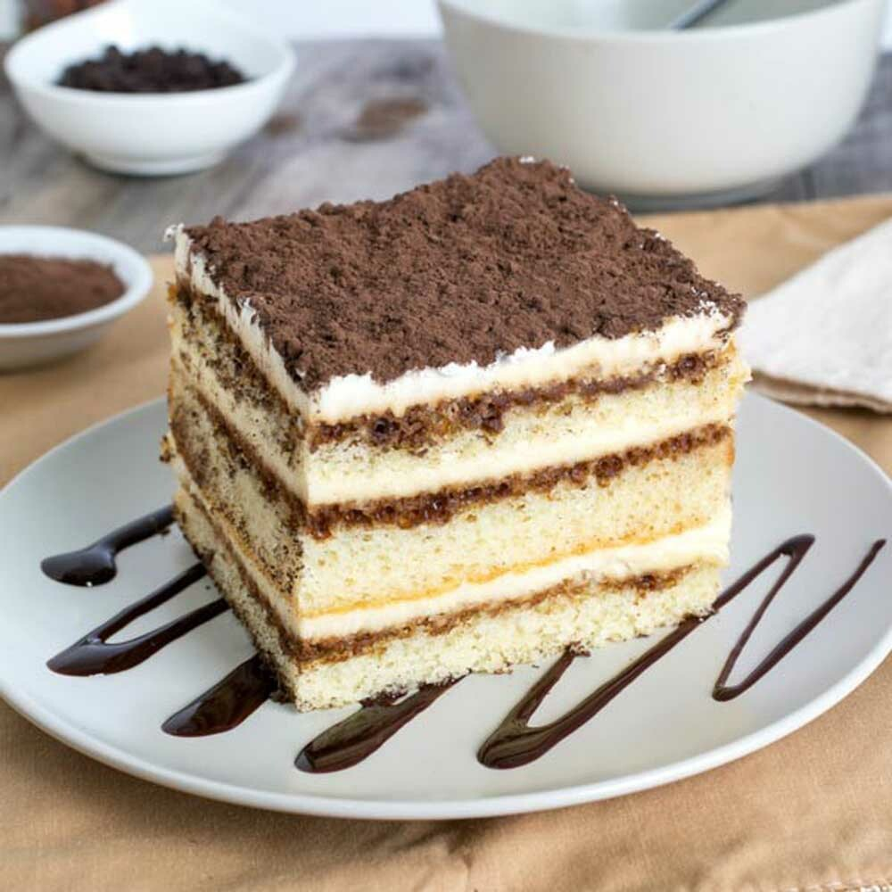

387 calories 31g fat 23g carbs 7g protein
Ingredients
6 large egg yolks
¾ cup white sugar
⅔ cup milk
1 ¼ cups heavy cream
½ teaspoon vanilla extract
1 pound mascarpone cheese, at room temperature
¼ cup strong brewed coffee, at room temperature
2 tablespoons rum
2 (3 ounce) packages ladyfinger cookies
1 tablespoon unsweetened cocoa powder
Steps
Whisk together egg yolks and sugar in a medium saucepan until well blended. Whisk in milk and cook over medium heat, stirring constantly, until mixture comes to a boil.
Boil gently for 1 minute, then remove from the heat and allow to cool slightly.
Cover tightly and chill in the refrigerator for 1 hour.
Beat cream and vanilla in a medium bowl with an electric mixer until stiff peaks form.
Remove egg yolk mixture from the refrigerator; add mascarpone cheese and whisk until smooth.
Combine coffee and rum in a small bowl. Split ladyfingers in half lengthwise and drizzle with the coffee mixture.
Arrange 1/2 of the soaked ladyfingers in the bottom of a 7x11-inch dish. Spread 1/2 of the mascarpone mixture over the ladyfingers, then spread 1/2 of the whipped cream over top. Repeat layers once more. Sprinkle cocoa powder over top.
Cover and refrigerate until set, 4 to 6 hours.
Return to top
Return to main page